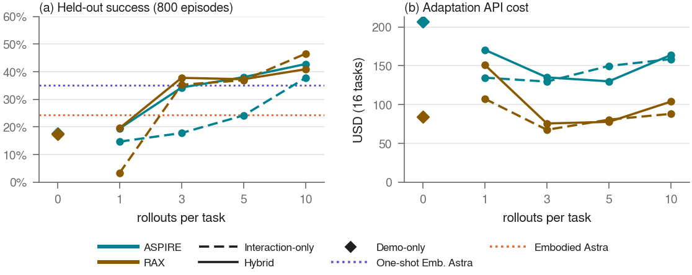

1. The current state of RoboMME
RoboMME evaluates robot memory through 16 tasks across four suites: Counting tests remembering repeated actions and events; Permanence tests tracking objects after they are hidden; Reference tests recalling which objects were indicated earlier; and Imitation tests reproducing demonstrated actions. As performance approaches the benchmark’s ceiling (Figure 1), an important question remains:
Can these policies generalize their memory capabilities beyond their training conditions?
2. Fine-tuned policies: limited generalization
We begin with SimpleMemVLA , one of the strongest open-source policies on the leaderboard. Its approach to memory modeling is surprisingly simple: fine-tune a Qwen3.5-4B VLM to draw directly on native video history, without a dedicated memory module. The VLM predicts subgoals, and their hidden representations guide a DiT-based action expert. After 2,560 H100 GPU-hours of training, the policy achieves 88.3% overall success, including 100% on PickXtimes.
To probe its generalization, we retain the original RoboMME scenes but extend task parameters beyond their training ranges, evaluating each setting over 10 episodes. Figure 2 reveals clear limits. On PickXtimes, the policy succeeds in every episode with up to five repetitions but fails every episode with more. Its predicted subgoals never advance past “for the fifth time,” matching the largest count in the training data (Figure 2, top).
Similarly, on PickHighlight, it solves 27 of 30 episodes within the training range, where 1–3 cubes are highlighted among 3–6 total cubes. When 4–6 cubes are highlighted among 8–12 total cubes, it solves only 4 of 30 episodes, with predicted subgoals rarely advancing beyond “the third highlighted cube” (Figure 2, middle).
On VideoUnmaskSwap, the robot sees a cube revealed under one of four containers, then watches the containers swap positions before lifting the one that hides it. SimpleMemVLA solves 28 of 30 episodes with 1–3 swaps, as in training, but only 9 of 30 with 4–6 swaps, falling to 1 of 10 with 6 swaps (Figure 2, bottom). In 20 of its 21 failures beyond the training range, it lifts the container standing where the cube was first revealed, as if the swaps had not happened.
These results indicate that the policy’s ability to count and track objects remains bounded by its training data. Despite extensive fine-tuning, it struggles to apply these capabilities beyond training conditions, even in familiar scenes. Other fine-tuned policies, including FrameSamp+Modul and PonderPounce , show similar limitations (Figure 2b). Together, these findings suggest that high success within the training distribution may reflect learned task patterns rather than generalizable memory capabilities.
See results for more models
3. Proprietary policies: strong transfer, remaining challenges
Large proprietary models offer a different route. Embodied Astra prompts GPT-6-Astra with the full image history, robot state, and camera calibration to generate reasoning and end-effector waypoints directly. Without task-specific fine-tuning, it scores 92.1% on RoboMME, above the reported human baseline of 90.5%, and succeeds in 91/100 of the same out-of-range tests. However, it cannot be fine-tuned, and a full RoboMME evaluation costs about $300 and 40 hours with one worker. More demanding tasks also reveal four challenges.
Challenge 1: Time-sensitive tasks
In StopCube, the robot needs to press a button when a moving cube reaches a target for the k-th time, demanding both accurate counting and precise timing. Fine-tuned policies perform well, with SimpleMemVLA achieving 92% success, PonderPounce 83%, and T²Mem 70%, while Astra reaches only 54%. Although Astra often counts correctly, it struggles to press within the narrow 0.4–0.8-second window, sometimes oscillating above the button or pressing prematurely (Figure 3). This reveals a gap between remembering events and executing time-critical actions.
Challenge 2: Continuous scene changes
In VideoRepick, the robot watches a demonstration to identify a cube, then picks it up a specified number of times. In the original condition, the cubes swap positions 0–2 times at the end of the demonstration and then remain stationary. We introduce continuous cube motion throughout the demonstration to test object tracking. Across 50 episodes with 3–7 identical cubes, Astra’s success drops from 100% (50/50) to 50% (25/50), reaching only 20% (2/10) with seven cubes (Figure 4). This highlights the difficulty of tracking object identity under continuous motion.
VideoPlaceOrder shows a similar pattern. The robot must place a cube on the ring it visited at a requested step of the demonstration. We compare the original condition, with at most one ring swap at the end, against continuous swaps throughout the demonstration. With 3–7 rings and 10 episodes per count under each condition, success falls from 100% (50/50) to 54% (27/50) (Figure 5).
Challenge 3: Occlusion
Real scenes often obscure task-relevant objects, requiring robots to combine viewpoints and remember earlier observations. In VideoUnmask, the robot needs to remember which containers hide target-colored cubes and uncover them in order. To test partial observability, we introduce a fence that obscures at least half of each target cube before it is covered. Across 50 episodes with 6–30 containers and 2–4 targets, Astra’s success drops from 100% (50/50) to 80% (40/50). In nine of the ten failures, Astra selects the wrong container (Figure 6), highlighting the difficulty of maintaining accurate object associations under occlusion.
Challenge 4: Interaction-limited tasks
Astra often recovers by correcting its actions repeatedly. In MoveCube, it can replan and push again when a cube deviates from its intended path (Figure 7, left). But can it use a failed attempt to improve the next when continuous correction is unavailable?
We test a variant in which the robot must roll a ball into the cube. Once released, the ball cannot be redirected. We allow two attempts, giving Astra one opportunity to use the first trajectory to adjust its aim or release. Astra succeeds in only 2 of 10 episodes (Figure 7, right). This result exposes a challenge beyond recalling execution history: using that history to adjust actions effectively within a few attempts.
4. Designing RoboMME-Plus
Building on the findings above, RoboMME-Plus extends RoboMME with harder tasks, held-out variations, and controlled adaptation budgets. It preserves the original 16 tasks, four suites, observation format, and action spaces, enabling direct evaluation of existing policies.
Harder tasks and held-out variations
We increase difficulty along four dimensions: (1) larger counts and more objects, (2) continuous motion and tighter timing, (3) partial observability, and (4) limited correction. Most tasks have easy, medium, and hard levels, progressing from expanded parameter ranges to more demanding execution conditions; MoveCube instead varies the manipulation method (Figure 8).
See episode length comparison
To test generalization beyond adaptation experience, 286 of the 800 test episodes introduce held-out variations (Figure 10): 182 alter perception (e.g., lighting, colors, noise), while 104 modify task mechanisms (e.g., motion, swapping, activation rules). During training, each factor appears at most once and in isolation; test episodes include unseen combinations.
Controlled adaptation protocol
To compare methods with different adaptation strategies fairly, we explicitly control access to demonstrations and simulator interactions. The training set provides 50 successful demonstrations (three per task, five for MoveCube), alongside up to 10 simulator rollouts per task on the training seeds.
We define four settings: (1) Zero-shot, (2) Demo-only, (3) Interaction-only, and (4) Hybrid (demonstrations and interactions). Together, they distinguish transfer from adaptation and measure the contributions of offline demonstrations and online interaction. All methods share the same rollout limits, and adapted systems must be frozen before testing.
| Setting | Released demos | Rollouts / task | Typical use |
|---|---|---|---|
| Zero-shot | – | 0 | transfer or evaluate directly |
| Demo-only | 50 | 0 | fine-tuning, in-context demos |
| Interaction-only | – | up to 10 | trial and error, exploration |
| Hybrid | 50 | up to 10 | both |
5. Experimental results
Baselines
We evaluate eight methods across all 800 test episodes, covering three approaches:
- Fine-tuned policies: FrameSamp+Modul (MME-VLA) , SimpleMemVLA , and PonderPounce , all trained on RoboMME.
- Frontier-model control: 3-tier Astra uses a VLM to decide when to call GPT-6-Astra for subtask planning and executes subtasks with π0.5. Embodied Astra directly predicts end-effector waypoints using GPT-6-Astra, while one-shot Embodied Astra additionally takes one in-context demonstration.
- Agent-developed code policies: ASPIRE and RAX use Claude Opus 5.5 to develop executable robot programs from demonstrations, simulator interaction, or both. Their frozen programs require no proprietary model calls at test time.
The first five methods are evaluated zero-shot. For ASPIRE and RAX, we evaluate independently developed policies using demonstrations only, interactions only, or both, with up to 10 rollouts per task. Few-shot fine-tuning of open-source policies is left to future work.
Transfer and few-shot adaptation
Table 1 compares zero-shot transfer, in-context demonstrations, and simulator-based adaptation.
More results for ASPIRE and RAX
| Method | Setting | Rollouts per task | ||||
|---|---|---|---|---|---|---|
| 0 | 1 | 3 | 5 | 10 | ||
| ASPIRE | Demo-only | 17.50 | – | – | – | – |
| ASPIRE | Interaction-only | – | 14.63 | 17.75 | 24.13 | 37.75 |
| ASPIRE | Hybrid | – | 19.38 | 34.25 | 38.00 | 42.75 |
| RAX | Demo-only | 17.38 | – | – | – | – |
| RAX | Interaction-only | – | 3.25 | 35.25 | 36.88 | 46.50 |
| RAX | Hybrid | – | 19.50 | 37.75 | 37.25 | 40.88 |
| Embodied Astra | Zero-shot | 24.25 | – | – | – | – |
| One-shot Embodied Astra | Demo-only | 35.13 | – | – | – | – |

Four findings stand out:
- Fine-tuned policies transfer poorly. SimpleMemVLA drops from 88.3% on RoboMME to 1.75% on RoboMME-Plus, FrameSamp+Modul from 44.5% to 2.38%, and PonderPounce from 60.8% to 2.50%. Strong performance on the original benchmark does not translate into robust transfer.
- Frontier models transfer better, but remain limited. Embodied Astra achieves 24.25% overall, down from 92.1% on RoboMME, while 3-tier Astra reaches 8.75%. A single in-context demonstration raises Embodied Astra’s overall success to 35.13%, with large gains on SwingXtimes (32% → 98%) and ButtonUnmask (34% → 78%), but little improvement on tasks requiring continuous tracking or precise execution.
- Simulator interaction substantially improves code policies. With demonstrations alone, ASPIRE and RAX reach 17.50% and 17.38%. With 10 rollouts per task, their best configurations reach 42.75% and 46.50%, respectively, surpassing one-shot Embodied Astra. Adding demonstrations to the 10 rollouts gives mixed results: it helps ASPIRE (37.75% → 42.75%) but hurts RAX (46.50% → 40.88%).
- Different approaches excel at different tasks. With 10 rollouts per task, RAX reaches 76% on VideoUnmaskSwap and ASPIRE 80% on StopCube, compared with Embodied Astra’s 2% and 22%. However, code policies still trail on dexterous manipulation: on MoveCube, they reach at most 6%, compared with Embodied Astra’s 22%.
Generalization and efficiency
Held-out variations reveal substantial overfitting. Table 3 compares the same episodes with each variation switched off and on. Embodied Astra remains relatively robust, while adapted code policies degrade sharply. ASPIRE drops from 54.5% to 22.3% under perceptual variations and from 58.7% to 17.3% under mechanism variations. RAX similarly drops from 62.5% to 8.0% and from 68.3% to 27.9%. These results suggest that code policies often exploit regularities of their limited training seeds rather than learning transferable skills.
| Method | Perceptual variation | Mechanism variation | ||
|---|---|---|---|---|
| w/o | w/ | w/o | w/ | |
| Embodied Astra (Zero-shot) | 9.8 | 8.9 (−0.9) | 14.4 | 24.0 (+9.6) |
| One-shot Embodied Astra (Demos) | 24.1 | 23.2 (−0.9) | 25.0 | 33.7 (+8.7) |
| ASPIRE (Demos + 10 rollouts) | 54.5 | 22.3 (−32.2) | 58.7 | 17.3 (−41.4) |
| RAX (10 rollouts) | 62.5 | 8.0 (−54.5) | 68.3 | 27.9 (−40.4) |
Code policies are efficient at inference, but adaptation does not guarantee generalization. Table 4 compares success, runtime, and cost. RAX and ASPIRE require only 17 ms and 8 ms of computation per step, respectively, with no test-time API costs. In contrast, Embodied Astra requires 344 ms per step and about $0.95 per episode; its one-shot variant requires 686 ms and $2.63. Developing code policies costs about $70–210 in API usage per configuration, paid once during adaptation.
| Method | Setting | Success | Avg. model time per step | Avg. API latency | Eval. cost | Adapt. cost | Total cost |
|---|---|---|---|---|---|---|---|
| RAX | 10 rollouts | 46.50% | 17 ms | – | $0 | $90 | $90 |
| ASPIRE | Demos + 10 rollouts | 42.75% | 8 ms | – | $0 | $160 | $160 |
| One-shot Embodied Astra | Demos | 35.13% | 686 ms | 19.1 s | $2,100 | – | $2,100 |
| Embodied Astra | Zero-shot | 24.25% | 344 ms | 12.2 s | $760 | – | $760 |
| 3-tier Astra | Zero-shot | 8.75% | 79 ms | 8.5 s | $840 | – | $840 |
| PonderPounce | Zero-shot | 2.50% | 199 ms | – | – | – | – |
| FrameSamp+Modul | Zero-shot | 2.38% | 7 ms | – | – | – | – |
| SimpleMemVLA | Zero-shot | 1.75% | 69 ms | – | – | – | – |
Overall, no method exceeds 50% success. Frontier-model control offers stronger zero-shot generalization, while code policies reach higher success with limited interaction and run at much lower inference cost, but remain vulnerable to unseen variations. RoboMME-Plus exposes the gap between successful adaptation and robust generalization.
6. Looking forward
RoboMME-Plus moves beyond memory in familiar settings toward reliable generalization, efficient exploration, and effective adaptation under changing conditions. Our findings point to several promising directions:
- Memory discovery : Learning what information to retain, how to update it, and when to use it for decision-making.
- Self-improving agents : Learning efficiently from limited interactions while developing policies that generalize beyond observed training conditions.
- World models : Predicting scene dynamics to support continuous tracking, anticipation, and precisely timed actions.
- Hybrid systems: Combining the adaptability and perception of frontier models, the efficiency of executable programs, and the responsive control of VLAs.
We hope RoboMME-Plus encourages research beyond benchmark-specific success, toward robot policies that can remember, adapt, and act reliably in unfamiliar environments.
Citation
If you find this blog useful, please cite:
@misc{dai2026robommeplus,
title = {{RoboMME-Plus}: Benchmarking Memory Generalization and Adaptation for Robot Policies},
author = {Dai, Yinpei and Liu, Yuejiang and Fu, Hongze and Finn, Chelsea and Fazeli, Nima and Chai, Joyce},
year = {2026},
month = {November},
url = {https://robomme.github.io/plus.html}
}